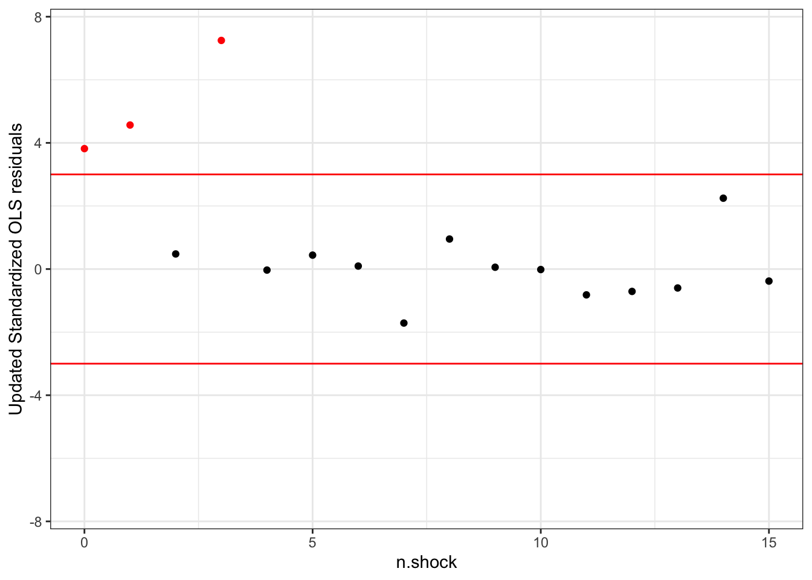

Chapter 2 Classical Linear Regression
In statistics, we aim to find pattern within data sets through fitting relevant models. A particular model that has proved to be useful is linear regression. In this section, we begin by describing this model in generalities and then proceed to explain how it can be estimated. This explanation of the general model will turn out to be useful to characterize robust and non-robust models.
2.1 General Model
Consider that we are given a data set of the form \((\mathbf{x}_i, y_i)_{i = 1}^n\) where \(\mathbf{x}_1 := (x_{11}, \ldots, x_{1p})^T, \ldots, \mathbf{x}_n := (x_{n1}, \ldots, x_{np})^T \in \mathbb{R}^p\) are \(n\) vectors with data points from \(p\) covariates and \(y_1, \ldots, y_n\in\mathbb{R}\) are \(n\) observations of a dependent random variable, with \(n\) and \(p\) being positive integers such that \(n > p\). In this document, we consider that \(\mathbf{x}_1, \ldots, \mathbf{x}_n\) are known vectors, not realizations of random variables, contrarily to \(y_1, \ldots, y_n.\)
We consider that \(x_{11} = \ldots = x_{n1} = 1\) to add an intercept to the model. In linear regression, we want to use the covariates to model the dependent variable and we assume that:
\[\begin{equation} y_i = \mathbf{x}_i^T \boldsymbol\beta + \epsilon_i, \tag{2.1} \end{equation}\]
where \(\boldsymbol\beta := (\beta_1, \ldots, \beta_p)^T\) is the vector of regression coefficients, and \(\epsilon_1, \ldots, \epsilon_n\) are \(n\) random errors that allow to explain the discrepancies between \(y_i\) and \(\mathbf{x}_i^T \boldsymbol\beta\).
While not especially important in itself, the idea below will play an important auxiliary role in the development of estimates for regression. Considering that the random error term \(\epsilon_i\) satisfying the Mutiplicative Model:
\[\begin{equation} \epsilon_i=\sigma\mathcal{u_i} \quad i=1,2,\ldots,n, \tag{2.2} \end{equation}\] where the \({u}_i\) ’s are independent and identically distributed (IID) with density \(f\) and \(\sigma\) > 0 is the unknown scale parameter. After simple steps of transforming random variables, the distributions of the \(\epsilon_i\) ’s density will be \[\begin{equation} \frac{1}{\sigma} f(\frac{\epsilon_i} {\sigma}),\,\sigma >0. \tag{2.3} \end{equation}\]
We can condense the model (2.1) by writing it in the matrix version as follows:
\[\begin{equation} \textbf{y} = \mathbf{X}\boldsymbol{\beta} + \boldsymbol\epsilon, \tag{2.4} \end{equation}\]where \(\mathbf{y}\) := \((y_1, \ldots, y_n)^T\), \(\mathbf{X}\) is a \(n\) \(\times\) \(p\) matrix with lines given by \(\mathbf{x}_1^T, \ldots, \mathbf{x}_n^T\), and \(\boldsymbol\epsilon\) := \((\epsilon_1, \ldots, \epsilon_n)^T\). 2
2.2 Classical Assumptions about Random Errors
In the last section, we introduced the model in generalities. In statistics, the most widespread assumption we make about the distribution of the random errors \(\epsilon_i\)s in the model introduced is, no doubt, that they are IID normal, with \(\epsilon_i \overset{\mathrm{iid}}{\sim} \mathcal{N(0,\sigma^2)}\). It could be translated into the matrix version as follows:
- \(E(\epsilon|\mathbf{X})=0\)
\(\quad\) Expected value of the error term is zero conditional on all values of the explanatory variable \(\mathbf{x}_i\). - \(Var(\epsilon|\mathbf{X})=\sigma^2\)
\(\quad\) The error term has the same variance conditional on all values of the explanatory variable, namely Homoskedasticity. - \(\epsilon∼\mathcal{N}(0,\sigma^2)\)
\(\quad\) The error term is independent of the explanatory variables and normally distributed, namely Normality.
Note that when we assume the disturbance term \(\epsilon_i\)s follow the identical normal distribution, we still use the same letter \(\sigma\) to denote the root of the true identical variance. Actually, it is because we could paraphrase the assumptions about the error term \(\epsilon_i\)s into the properties of random variable \(u_i\)s as this:
- \(u_i \overset{\mathrm{iid}}{\sim} \mathcal{N(0,1)}\)
\(\quad\) \(u_i\)’s are independent and identically distributed random variables, which follow the standard normal distribution.
In the following section, we will walk through the implications of these assumptions in two main methods, Maximum Likelihood Estimation and Ordinary Least Squares.
2.3 Maximum Likelihood Estimation
A way to perform model fitting is to find the combination of parameter values which most likely explains the data observed. The maximum likelihood estimator is based on this idea: it is the combination of parameter values which maximize the likelihood function. The likelihood function serves as a measure of goodness of fit of a combination of parameter values, with respect to a given data set and model. In the wake of it, we will discuss how to obtain the likelihood function under the framework described in the last section.
The likelihood function \(\mathcal{L}\) is a function which takes in the parameters \(\boldsymbol{\beta}\) and \(\sigma\) as inputs and outputs the likelihood of observing \(\textbf{y}\) given \(\beta\) and \(\sigma\). From (1), we see that, given \(\boldsymbol\beta\) and \(\sigma\), \(y_i\) follows from a transformation of \(\epsilon_i\) after adding a location parameter of \(\mathbf{x}_i^T \boldsymbol\beta\) (recall that the vectors \(\mathbf{x}_i\) are considered known). Hence, the density of \(y_i\) evaluated at \(y_i\) is equal to
\[\begin{equation} \frac{1}{\sigma} f\left(\frac{y_i - \mathbf{x}_i^T \boldsymbol\beta}{\sigma}\right). \tag{2.5} \end{equation}\]In addition, since we assumed in our model that the errors \(\epsilon_i\) are independent, \(y_i\) are also independent as translating independent variables by a constant term yields independent variables. Therefore, given \(\boldsymbol{\beta}\) and \(\sigma\), the likelihood of observing \(\textbf{y}\) is the multiplication of the likelihood of observing each \(y_i\) (2.5).
The likelihood function evaluated at \(\beta\) and \(\sigma\) is thus given by
\[\begin{equation} \mathcal{L}(\boldsymbol{\beta},\sigma|\mathbf{y}):=\prod_{i=1}^{n}\frac{1}{\sigma}f( \frac{ y_i - \mathbf {x}^T_i \boldsymbol{\beta} } {\sigma})\,. \tag{2.6} \end{equation}\]Working directly with multiplication when maximizing can be quite challenging as it is hard to take derivative of multiplication over multiple variables to find the critical points (it is at the critical points that minimum and maximum values are achieved). In addition, the product of large amount of small density values can impair the precision of our calculation when using computers. To circumvent these difficulties, we usually take the \(\log\) of the likelihood function. By taking the \(\log\) of the likelihood function, we are able to transform maximizing multiplication to maximizing summation, which is much easier to work with. We define the log-likelihood function \(\ell\) as
\[\begin{equation} \ell(\boldsymbol{\beta},\sigma|\mathbf{y}):=log\,\mathcal{L}(\boldsymbol{\beta},\sigma|\mathbf{y}) = -\sum_{i=1}^n\left(log\,\sigma+\rho\left(\frac{ y_i - \mathbf {x}^T_i \boldsymbol{\beta} } {\sigma}\right)\right) \tag{2.7} \end{equation}\]where \[{\rho} := - log\,f.\] As \(\log\) is a strictly increasing function, the value which maximizes the original likelihood function is conveniently the same as the one that maximizes the log-likelihood. Therefore, using the log-likelihood when performing maximum likelihood estimation is preferred.
Under the normal assumption for the random errors \(\epsilon_i, \; i=1,2,\ldots,n\), it is assumed that \(f = \mathcal{N}(0, 1)\). Hence, the likelihood function \(\mathcal{L}\) in the normal linear regression model becomes \[\begin{equation} \mathcal{L}(\boldsymbol\beta, \sigma \mid \mathbf{y}) = \prod_{i=1}^n \frac{1}{\sigma} \frac{1}{\sqrt{2\pi}}exp \Big\{{-\frac{(y_i - \mathbf {x}^T_i \boldsymbol{\beta})^2}{2\sigma^2}}\Big\} =\left(\frac{1}{\sigma\sqrt{2\pi}}\right)^n exp\Big\{{-\frac{\sum_{i=1}^{n} (y_i - \mathbf {x}^T_i \boldsymbol{\beta})^2}{2\sigma^2}}\Big\}, \tag{2.8} \end{equation}\]
and the log-likelihood function \(\ell\) in the (2.7) becomes \[\begin{equation} \ell(\boldsymbol\beta, \sigma \mid \mathbf{y}) = -n\log\left(\sigma\sqrt{2\pi}\right) - \sum_{i=1}^{n} \frac{(y_i - \mathbf {x}^T_i \boldsymbol{\beta})^2}{2\sigma^2}. \tag{2.9} \end{equation}\]
As discussed above, maximizing likelihood function \(\mathcal{L}\) is equivalent to maximizing the log-likelihood function \(\ell\). Therefore, we only need to maximize \(\texttt{(3)}\), which is equivalent to minimize \[\begin{equation} n\log\sigma+\sum_{i=1}^{n} \frac{(y_i - \mathbf {x}^T_i \boldsymbol{\beta})^2}{2\sigma^2}.\tag{2.10} \end{equation}\]
So the parameter estimates should actually be write as the solution to the optimization question
\[\begin{equation} \hat{\boldsymbol{\beta}}_{MLE},\,\hat{\sigma}_{MLE}:=\, \mathop{\mathrm{argmax}}\limits_{{\boldsymbol{\beta}},\,{\sigma}}\,n\log\sigma+\sum_{i=1}^{n}\frac{(y_i - \mathbf{x}^T_i \boldsymbol{\beta})^2}{2\sigma^2} \tag{2.11} \end{equation}\]
A convenient property of normal linear regression is that we can easily calculate the exact value of the estimates under the classical and some specific assumptions. In this document, we assume that the \((\mathbf{X}\mathbf{X}^T)\) matrix is invertible, which could guarantee obtaining the \(\beta\) estimate.
We give the results without proof in the following part. (Process: firstly, view \(\sigma\) as a constant, then take partial derivative respect to \(\beta\) and let the expression to 0 to get \(\sigma\). Again, take partial derivative respect to \(\hat{\sigma}_{MLE}\) and let the expression to 0 to obtain \(\hat{\beta}_{MLE}\)). The minimum of (2.10) is attained when
\[\begin{align} \hat{\boldsymbol\beta}_{MLE} &= (\mathbf{X}\mathbf{X}^T)^{-1}\mathbf{X}^T\mathbf{y}, \\\ \hat{\sigma}_{MLE}&=\sqrt{\frac{\sum_{i=1}^{n}(y_i - \textbf{x}_i^T\hat{\boldsymbol\beta}_{MLE})^2}{n}}. \tag{2.12} \end{align}\]
But the \(\hat{\sigma}_{MLE}\) is arguably biased for estimating the true \(\sigma\).
2.4 Ordinary Least Squares Estimation
Another commonly used estimate for \(\beta\) is the Ordinary Least Squares \(OLS\)) estimate. Recall that the criteria we use for obtaining \(OLS\) estimates is to find the estimator \(\hat{\beta}_{OLS}\) that minimizes the Sum of Squared Residuals \(SSR\). \(SSR\) could be defined in scalar notation as
\[\begin{equation} \mathtt{SSR}:=\sum_{i=1}^nr_i^2\, \tag{2.13} \end{equation}\]
where the residual \(r_i\) is given by \(r_i:=y_i - \mathbf{x}^T_i \boldsymbol{\beta}.\) The vector of residuals \(\mathbf{e}\) is given by \(\mathbf{e} := (r_{1}, \ldots, r_{n})^T.\)3 Hence, the vector \(\mathbf{e}\) could also be computed by: \(\mathbf{e} = \mathbf{y} - \mathbf{X}\boldsymbol{\hat{\beta}}.\) The corresponding matrix-form expansion of the Sum of Squared Residuals (2.13) could be conducted as follows:
\[\begin{align} \mathtt{SSR} &:=\mathbf{e}^T\mathbf{e} \\ &= \mathbf{y}^T\mathbf{y} − {\hat{\boldsymbol\beta}^T}\mathbf{X}^T\mathbf{y} − \mathbf{y}^T\mathbf{X}{\hat{\boldsymbol\beta}} + \hat{\boldsymbol\beta}^T\mathbf{X}^T\mathbf{X}{\hat{\boldsymbol\beta}}\\ &= \mathbf{y}^T\mathbf{y} − 2{\hat{\boldsymbol\beta}^T}\mathbf{X}^T\mathbf{y} + {\hat{\boldsymbol\beta}^T}\mathbf{X}^T\mathbf{X}{\hat{\boldsymbol\beta}} \tag{2.14} \end{align}\]
Take derivative of (2.14) with respect to \(\boldsymbol{\hat\beta}\) and then let the equation be zero:
\[\begin{equation} \frac{\partial \mathbf{e}^T\mathbf{e}}{\partial {\hat{\boldsymbol\beta}}} = −2\mathbf{X}^T\mathbf{y} +2\mathbf{X}^T\mathbf{X}{\hat{\boldsymbol\beta}} = \mathbf{0}. \tag{2.15} \end{equation}\]
As long as the inverse of \((\mathbf{X}^T\mathbf{X})\) exists, we could compute the estimate\(\hat{\beta}_{OLS}\) without truly applying a lot of4 the assumptions:
\[\begin{equation} \hat{\boldsymbol\beta}_{OLS} = (\mathbf{X}\mathbf{X}^T)^{-1}\mathbf{X}^T\boldsymbol{\mathcal{y}}, \tag{2.16} \end{equation}\]
which is the same with \(\hat{\boldsymbol{\beta}}_{MLE}\) showed in (2.12). In addition, since we know that \(\hat{\sigma}_{MLE}\) is biased, we give the unbiased estimate for \({\sigma}\) by
\[\begin{equation} \hat\sigma_{OLS}:=\sqrt{\frac{\sum_{i=1}^{n}(y_i-\boldsymbol{x_i}^T\boldsymbol{\hat{\beta}}_{OLS})^2}{n-p}}. \tag{2.17} \end{equation}\]
2.5 Experiments using Classical Linear Regression Methods
However, it is well known that the OLS estimate is extremely sensitive to the outliers. A single outlier can have large effect on the OLS estimate. Let’s start to demonstrate how outliers could distort the fitted line.

Despite indicating the downward trend, the fit in the figure shown is nevertheless inaccurate. It hovers between the higher valued data from the top left corner and bottom right and the rest of the data without accurately fitting either groups. This is clearly not a good fit for the data set.
To standardize the residuals and conduct outliers detection, we let n equal 16 and p equal to 2 in the (2.17) to calculate the unbiased \(\hat{\sigma}_{OLS}\).

In such a situation, no outliers would be deemed suspicious under the the three-sigma rule, which refers to a thumb of rule in emprical science: a traditional measure of the “outlyingness” of an observation xi with respect to a sample is the ratio between its distance to the sample mean and the sample standard deviation (SD) : \[t_i = \frac{x_i-\bar{x}}{SD}.\] Observations with \(|t_i | > 3\) are traditionally deemed as suspicious (the “three-sigma rule”), based on the fact that they would be “very unlikely” under normality, since \(P(|x| ≥ 3) = 0.003\) for a random variable x with a standard normal distribution.
In this the residuals plot, there are no suspicious data entries as none of them have standardized residual of absolute value larger than 3. However, this is very misleading given what we observed in the fitted line. We might be able to say that Ordinary Least Squares estimates behave badly here. One remedy is to remove influential observations from the least-squares fit. Hence, we fit another linear model using OLS method to the shock data without 3 problematic data points. Apparently, this updated model is a much more accurate fit for the majority of the data entries.

Similarly, we compute the unbiased estimate for \(\hat\sigma_{OLS}\) and then update the column for standardized residuals column in the shock.update dataset.
However, when the model is updated by removing the observed outliers, standardized residuals of the data points with entry equal to 0,1,3 significantly increased, rendering value 3.81,4.56, and 7.24 respectively, confirming our suspicion that these entries are outliers.
| n.shocks | time | updated.residuals | ols.standardized.updated.residuals | class |
|---|---|---|---|---|
| 3 | 14.2 | 7.944199 | 7.248111 | outlier |
| 1 | 11.9 | 5.004578 | 4.566066 | outlier |
| 0 | 11.4 | 4.184767 | 3.818089 | outlier |
Also, we plot the OLS standardized residuals computed excluding the points with n.shocks equal to 0,1 and 3. From the updated plot, it is very clear that data entries with n.shocks equal to 0, 1, and 3 are indeed outliers.
#plot updated standardized residuals
r2<-ggplot(data = bulk)+
geom_point(aes(bulk$n.shocks, bulk$ols.standardized.updated.residuals))+
geom_hline(yintercept = 3,color="red")+
geom_hline(yintercept = -3,color="red")+
xlab("n.shock")+
ylim(-7.5,7.5)+
ylab("Updated Standardized OLS residuals")+
theme_bw()
r2<-r2+geom_point(data = outlier,aes(outlier$n.shocks, outlier$ols.standardized.updated.residuals),color="red")
r2
The lack of indication that these outliers are indeed outliers in our original fit is the result of Masking Effect. In the original OLS fit, data entry with n.shocks equal to 3 deviates the most from the fit. In order to minimize the sum of square of residuals, the regression line is “pulled” toward the outliers and \(\hat{\sigma}\) increases, both effects aids to mask the existence of outliers.
Take data entry with n.shocks equal to 3 as an example, in the original OLS model, it has a residual of 5.55; for the updated fit, the same data entry has a residual of 7.94. The standardized residuals of this data entry are 2.46 and 7.24 respectively. This large discrepancy is observed because the original fit largely adjust itself for the value of the outliers in the fitting process.
| n.shocks | time | residuals | standardized.residuals | type | |
|---|---|---|---|---|---|
| 4 | 3 | 14.2 | 5.554265 | 2.460839 | original OLS |
| 1 | 3 | 14.2 | 7.944199 | 7.248111 | updated OLS |
Small Questions
In most cases, we begin by running an OLS regression and doing some diagnostics. We will begin by running an OLS regression and looking at diagnostic plots examining residuals, fitted values, Cook’s distance, and leverage.
Actually, it seems still a little wierd for me to directly say that the points with entry equal to 0, 1, 3 are problematic at the beginning. Because what we get will be different from that if using some classical techniques to detect the outliers.
plot(ols,las=1)
shock[c(8,15,4),]We use the notation \(a := b\) to say that we define \(a\) by setting it equal to \(b\).↩︎
Be careful about disguishing between random errors(\(\epsilon_i\)) that cannot be observed and residuals (\(r_i\)) that can be observed.↩︎
Actually, what we only assume so far is about the Linearity: the model is linear in the parameters↩︎